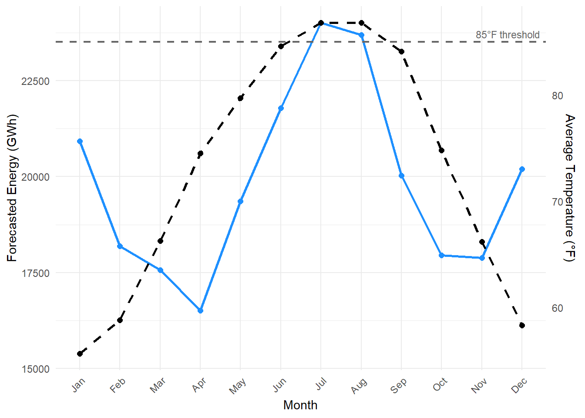

| Month | 2022 Avg Temp (°F) | 2023 Avg Temp (°F) | 2024 Avg Temp (°F) |
|---|---|---|---|
| Jan | 54.2 | 58.5 | 54.3 |
| Feb | 58.4 | 59.2 | 58.9 |
| Mar | 70.0 | 64.6 | 64.2 |
| Apr | 81.9 | 70.7 | 71.0 |
| May | 80.3 | 78.3 | 80.6 |
| Jun | 86.2 | 83.0 | 84.7 |
| Jul | 86.0 | 86.6 | 87.8 |
| Aug | 83.0 | 89.2 | 88.3 |
| Sep | 83.8 | 85.7 | 82.8 |
| Oct | 73.5 | 75.2 | 75.7 |
| Nov | 62.3 | 64.9 | 71.3 |
| Dec | 58.2 | 58.2 | 58.5 |
1 Executive Summary
1.1 Executive Summary
The power plant located at Dauphin Island, Alabama, relies on Gulf of Mexico water to cool its equipment, with an operational limit set at water temperatures below 85°F. Rising ocean temperatures pose significant economic and operational risks, particularly during peak electricity demand in summer.
Historical analysis (2022–2024) of Gulf water temperatures indicates consistent exceedances of the 85°F threshold in July and August, with occasional exceedances in June and September. Forecasted electricity demand for 2024 aligns closely with these periods of elevated temperatures, exacerbating the risk of reduced operational capacity precisely when energy demand peaks.
Key findings include:
- Average monthly temperatures in peak summer regularly exceed the plant’s cooling threshold.
- Peak energy demand occurs simultaneously with these high-temperature months, increasing the potential for shortages and higher operational costs.
1.1.1 Important Visualizations and Tables
1.1.1.1 Monthly Average Water Temperatures (°F) at Dauphin Island (2022–2024)
The following table presents the average monthly water temperatures for each year between 2022 and 2024. It highlights periods where the operational threshold was breached, offering a clear view of seasonal patterns and year-to-year variability.
1.1.1.2 Forecasted Net Energy For Load (GWh) by Month for SERC-SE (2024)
This table summarizes the monthly forecasted electricity demand for the SERC-SE region in 2024, showing the seasonal rise in energy needs that aligns with periods of higher temperatures.
| Month | Energy (GWh) |
|---|---|
| Jan | 20928 |
| Feb | 18190 |
| Mar | 17563 |
| Apr | 16515 |
| May | 19353 |
| Jun | 21785 |
| Jul | 24007 |
| Aug | 23694 |
| Sep | 20023 |
| Oct | 17945 |
| Nov | 17883 |
| Dec | 20201 |
1.1.1.3 Combined Temperature and Energy Usage Graph
The chart below overlays the forecasted 2024 energy usage with the average water temperatures (2022–2024) to reveal a concerning trend: periods of highest energy demand correspond closely with months where water temperatures exceed the 85°F operational limit.

To mitigate these risks, we recommend:
- Evaluating alternative cooling methods to ensure operational stability.
- Investing in additional energy storage or backup generation capabilities.
- Performing detailed economic and predictive analyses to inform strategic planning under various climate projections.